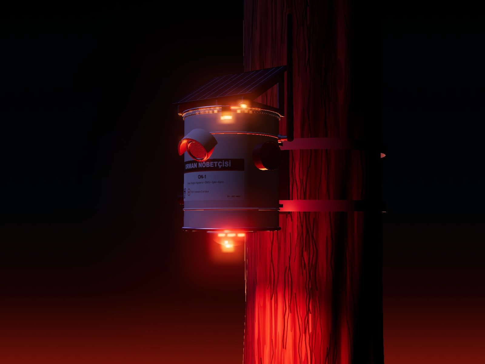

Ağaca asılan, termal kamera ve gaz sensörüyle yangını doğrulayan, SMS ile konum gönderen ve yerinde ışıklı-sesli alarm veren bağımsız algılama düğümü.
64noktalı termal görüş
< 60 snalgılamadan SMS'e
60+ güngüneşsiz çalışma
5numaraya konumlu SMS
Orman Nöbetçisi ON-1Ormanın gece gündüz uyanık gözü.
Neden ON-1
İlk dakikalar yangının kaderini belirler.
Orman yangınları çoğu zaman yol kenarında, piknik alanında ya da yerleşim sınırında küçük bir odak olarak başlar. Gözetleme kuleleri ve kameralar dumanı ancak yükseldiğinde görür; ON-1 ise riskli noktanın hemen üstünde, belirtiyi kaynağında yakalar.
Kaynağında
Cihaz riskli noktaya 25–30 m mesafede, odak henüz küçükken ısıyı ve dumanı algılar.
Doğrulanmış
Üç farklı belirti birlikte puanlanır, 30 saniyelik doğrulamayla yanlış alarm azaltılır.
Altyapısız
Elektrik, kablo ya da sunucu gerekmez. Güneşle çalışır, mevcut GSM şebekesini kullanır.
Nasıl çalışır
01 · ALGILA
Isı, duman ve hava
AMG8833 termal dizisi 64 noktada sıcak bölge arar. BME680 dumanla düşen gaz direncini, ani sıcaklık artışını ve nem düşüşünü izler.
02 · DOĞRULA
Çoklu sensör skoru
Skor eşiği aşılınca cihaz 30 sn boyunca 5 sn arayla yeniden ölçer. Belirtiler sürerse alarm verir, sürmezse normale döner.
03 · UYAR
Konumlu SMS ve arama
5 kayıtlı numaraya harita bağlantılı SMS gider; istenirse ilk numara sesli aranır. Alarm sürdükçe 15 dk'da bir güncelleme gelir.
04 · YERİNDE ALARM
Strob ışık ve siren
6 × 1 W kırmızı strob ve 105 dB siren yakındakileri uzaklaştırır, ekiplerin cihazı gece de bulmasını sağlar.
0 sn · belirti5 sn · ön alarm~35 sn · doğrulandı< 60 sn · SMS + ışık + siren
Örnek alarm mesajı
Mesaj tek SMS'e sığar (160 karakter) ve her telefonda haritada açılan konum bağlantısı içerir. Uygulama ya da internet gerekmez.
Kalaylı sac gövde hayvanlara, doluya ve UV'ye dayanıklıdır, yerelde ucuza üretilir. Beyaz ısı yansıtıcı boya, iç köpük kaplama ve güneşlik görevi gören panel elektroniği yaz sıcağından korur.
Haberleşme
LTE Cat-1 + GSM yedek
SIMCom A7670E modem; metal gövde sinyali kesmesin diye 3 dBi anten dışarıda.
Enerji
MPPT şarj, 7000 mAh
6 V 3 W panel, NTC korumalı CN3791 MPPT şarj ve 2 × 18650 Li-ion.
Isı
Panel = güneşlik
Panelle kapak arasında 15 mm hava boşluğu, RAL 9010 beyaz boya, alüminyum yüzlü köpük.
Güvenlik
Kurcalama uyarısı
Titreşim/eğim ve kapak sensörleri; PIN ve numara listesiyle korunan komutlar.
Bakım
Kendi kendini izler
Günlük durum SMS'i; düşük pil, sensör ve modem arızalarında otomatik kurtarma.
Kurulum
Açmadan test
Etiketteki noktaya mıknatıs tutulunca ışık-siren testi ve test SMS'i.
Orman Nöbetçisi ON-103
Teknik özellikler
Ölçülebilir ve belgelenmiş.
Mikrodenetleyici
ATmega328P, 8 MHz, 3,3 V (Arduino uyumlu)
Termal sensör
Panasonic AMG8833, 8×8, 60°, 0–80 °C
Gaz / ortam
Bosch BME680: VOC, sıcaklık, nem, basınç
Algılama menzili
1 m² açık alev, tipik 25–30 m*
Haberleşme
LTE Cat-1 B1/B3/B5/B7/B8/B20 + GSM 900/1800
Uyarı
SMS (5 numara), sesli arama, günlük rapor
Yerel alarm
6 × 1 W kırmızı strob, 105 dB siren
Güneş paneli
6 V 3 W mono ETFE, 30° eğim
Batarya
2 × 18650 Li-ion, 7000 mAh / 25,9 Wh
Çalışma sıcaklığı
−20 … +60 °C (şarj 0 … 45 °C)
Gövde
Teneke Ø153 × 178 mm, RAL 9010, IP54
Ağırlık
≈ 1,3 kg (panel ve braket dahil)
Montaj
3–5 m, paslanmaz kelepçe Ø15–60 cm / M6 mapa
Önerilen aralık
Riskli hatlar boyunca 50–100 m
* AMG8833 piksel geometrisinden hesaplanmıştır; bitki örtüsüne göre değişir, pilot sahada doğrulanır.
Enerji bütçesi
Günlük tüketim (ortalama ≈ 2,3 mA)0,21 Wh
Panel üretimi — gölgeli orman, 1 tepe güneş saati2,25 Wh
≈ 10×enerji marjı
≈ 95 günhesaplanan güneşsiz çalışma
≥ 60 güngaranti hedefi
≈ 15 sakesintisiz alarm
Orman Nöbetçisi ON-104
Kurulum ve kullanım
Bir ekip, on beş dakika.

Üstte: paslanmaz braket ve kelepçeyle ağaç montajı. Altta: gece alarm anı.
SIM'i takın, kapağı kilitleyinPIN kodu kapalı Nano-SIM (M2M hat önerilir), EPDM conta, 3 paslanmaz klips.
Yeri seçin3–5 m yükseklik; termal pencere riskli alana, panel güneye.
Kelepçeyle bağlayınÇivi/vida yok. EPDM pedler ağaca, bant yılda bir gevşetilir.
Mıknatısla uyandırınEtiketteki “N” noktasına 3 sn mıknatıs; yeşil LED hızlı yanıp söner.
SMS ile tanıtınYönetici numarası, konum, cihaz adı ve yeni PIN.
Test edin1234 TEST ile ışık, siren ve SMS iletimi doğrulanır.
SMS komutları
1234 EKLE 1 +905xxxxxxxxx
Yönetici/uyarı numarası ekle
1234 KONUM 39.70512,26.85211
Kurulum koordinatı
1234 AD KazDagi-K3
Cihaz adı
1234 DURUM
Anlık rapor
1234 HASSAS 1 | 2 | 3
Hassasiyet
1234 SESSIZ 30
Yerel alarmı 30 dk sustur
1234 RAPOR 24
Günlük durum SMS'i (saat)
1234 PIN 5678
PIN değiştir
Bakım: yılda bir panel temizliği, kelepçe kontrolü, silika jel değişimi ve TEST komutu.
Orman Nöbetçisi ON-105
Uygulama alanları
Riskin başladığı yerde.
ON-1, geniş alan gözetiminin yerine değil, onu tamamlamak için tasarlanmıştır: insan faaliyetinin yoğun olduğu ve yangınların en sık başladığı hatlara yoğunlaşır.
Piknik ve kamp alanları
Mangal, ateş ve sigara kaynaklı başlangıçlar için alan çevresine halka şeklinde yerleşim.
Yol ve demiryolu kenarları
Orman içinden geçen hatlar boyunca 50–100 m aralıkla doğrusal yerleşim.
Yerleşim-orman ara yüzü
Köy, site ve tesislerin orman sınırında belediye ve muhtarlıklara doğrudan SMS.
Enerji hatları ve tesisler
Trafo, direk ve orman içi tesis çevresinde erken uyarı ve olay kaydı.
Teslimat seçenekleri
Pilot10 cihaz
Saha keşfi, yerleşim planı, kurulum, 3 ay izleme ve rapor.
Bölge50–200 cihaz
Kurulum ekibi eğitimi, toplu yapılandırma, yıllık bakım sözleşmesi.
OEMTasarım lisansı
Şema, BOM, firmware ve mekanik çizimlerle yerel üretim.
Pilot sahanızı birlikte planlayalım.
Teknik doküman, devre şeması ve BOM talep üzerine paylaşılır.
Orman Nöbetçisi ON-1 · Rev A · 2026Ormanın gece gündüz uyanık gözü.